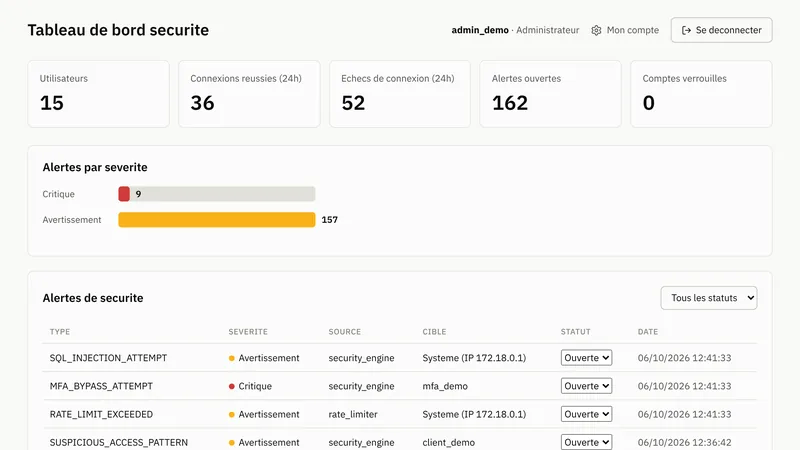

Ce qui m’intéresse, c’est le côté défensif : surveiller un réseau, comprendre une alerte, réagir quand quelque chose cloche. J’ai commencé mes études à Douala, au Cameroun, et je les poursuis aujourd’hui en France. Vous trouverez ici mon parcours, mes stages et les projets sur lesquels j’ai travaillé.
Je suis en Master 1 Cybersécurité à Nexa Digital School. J’ai fait un BTS à Douala, puis une licence en administration et sécurité des réseaux et un Bachelor à l’ECE Paris.
Ce qui m’attire dans ce métier, c’est la défense : repérer une activité anormale dans des journaux, surveiller un réseau, sécuriser des systèmes et des accès. Mes trois stages, à Paris et au Cameroun, m’ont donné un premier aperçu de ce travail. À côté, j’ai monté des projets pour pratiquer : une API sécurisée, un laboratoire de sécurité réseau et un mini-SIEM.
Je cherche aujourd’hui une alternance d’analyste SOC en Île-de-France, au rythme de trois semaines en entreprise et une semaine en cours. Je peux commencer tout de suite.
En dehors des cours, je cuisine, je lis, je voyage et je fais de la moto. Je m’investis aussi dans des actions de solidarité : j’ai aidé aux Restos du Cœur, et avec des amis je distribue des vêtements dans la rue en hiver.
Formation actuelle
Master 1 Cybersécurité, Nexa Digital School
Je recherche
Une alternance d’analyste SOC
Rythme
3 semaines en entreprise, 1 semaine en cours
Zone
Île-de-France
Langues
Français (langue maternelle), anglais (documentation technique, veille)
Certification en préparation
CCNA (Cisco), examen prévu en décembre 2026
Parcours scolaire
Du BTS à Douala jusqu’au Master à Nexa Digital School : quatre années d’études en réseaux, systèmes et cybersécurité.
2026 – en cours
Master 1 Cybersécurité (Bac+4)
Nexa Digital School
Module Sécurité réseaux (laboratoire EmmaCorp) et projet fil rouge d’administration Active Directory et LDAP.
2025 – 2026
Bachelor Cybersécurité et Réseaux
ECE Paris
Projet de soutenance : CyberShield, une plateforme API sécurisée.
2024 – 2025
Licence Administration et Sécurité des Réseaux
IUT
2022 – 2024
BTS Gestion des Systèmes Informatiques
IUC Douala
Projet de BTS : conception d’un mini-SIEM.
Certifications
CCNA (Cisco)En préparation, examen prévu en décembre 2026
Cisco Networking AcademyIntroduction to Cybersecurity, Networking Basics, adressage et dépannage réseau, configuration des équipements
Expériences professionnelles
Trois stages dans des secteurs différents (immobilier, distribution, énergie), avec à chaque fois la même préoccupation : protéger le réseau, les postes et les accès.
Stagiaire Administrateur Systèmes, Réseaux et Sécurité Web
Juin 2026 – Octobre 2026
CASANEDEN · Paris · Stage
Société française spécialisée dans l’immobilier, qui propose ses services via ses sites web. Stage centré sur l’administration et la sécurisation d’un site e-commerce WordPress/WooCommerce.
Administration d’un site e-commerce WordPress/WooCommerce hébergé sur O2switch (cPanel)
Application des recommandations OWASP pour réduire la surface d’attaque du site
Application des règles RGPD sur le site pour la protection des données personnelles
Paramétrage et suivi de la base MySQL
Rédaction de la documentation technique des configurations
Outils
WordPress
WooCommerce
O2switch (cPanel)
MySQL
Assistant Administrateur Réseau et Sécurité
Mars 2025 – Août 2025
Oreal-CAM SARL · Douala · Stage
Chaîne d’entreprises de la grande distribution de pièces de moto, dont plusieurs agences partagent un même réseau informatique. Stage consacré à la sécurité de ce réseau commun et des accès des utilisateurs.
Supervision du réseau partagé entre les agences et suivi des alertes de sécurité
Gestion des identités et des accès : création, modification et suppression des comptes et des droits utilisateurs
Traitement et résolution des incidents de connectivité et de sécurité sur les postes de travail
Repérage des vulnérabilités (équipements et postes), application des correctifs et rédaction de procédures
Stagiaire Informatique, Réseaux et Cybersécurité
2023 – 2024
TotalEnergies · Cameroun · Stage
Groupe énergétique multinational présent dans près de 120 pays. Sa filiale au Cameroun, active depuis 1947, est leader de la distribution avec environ 190 stations-service et plus de 240 collaborateurs. Stage axé sur la sécurité du réseau et des postes de travail.
Surveillance du trafic réseau et détection d’anomalies par capture et analyse de paquets avec Wireshark
Analyse d’événements de sécurité et diagnostic des incidents signalés par les utilisateurs
Installation et sécurisation (durcissement) de postes Windows et Linux, avec gestion des accès
Sensibilisation des utilisateurs aux bonnes pratiques de cybersécurité
Outils
Wireshark
Windows
Linux
Projets scolaires et professionnels
Sept projets, menés à l’école ou en stage. Chacun a sa fiche détaillée : contexte, ce que j’ai fait, résultats et outils. Un clic sur « Voir le détail » l’ouvre.

Projet scolaire2026
CyberShield
Plateforme de sécurité pour application web · Projet de soutenance, ECE Paris
Une plateforme qui sécurise une application web et surveille son activité : double authentification, rôles, journal d’audit chaîné et détection des attaques, testée avec 65 tests automatisés et OWASP ZAP.
FastAPI
PostgreSQL
Redis
React
Docker
Nginx et TLS
OWASP ZAP
Contexte
Projet de soutenance de la 3e année de Bachelor Cybersécurité (ECE Paris, 2026). Il répond à deux questions : comment construire une application web qui se protège contre les attaques usuelles, et comment savoir qui fait quoi dans l’application, repérer les comportements suspects et conserver des preuves fiables en cas d’incident.
Le fil directeur est la sécurité dès la conception (Security by Design) : chaque mécanisme est décidé à l’analyse, mis en œuvre couche par couche, puis vérifié par des tests. Seuls des logiciels libres ou gratuits ont été utilisés.
7échelons de sécurité
5rôles contrôlés en base
65tests automatisés, 13 fichiers
63 / 0contrôles ZAP réussis / échecs
Ce que j’ai réalisé
Une API FastAPI (Python 3.12) avec PostgreSQL 16 et Redis, déployée avec Docker Compose derrière Nginx en HTTPS (certificat local généré avec mkcert)
Authentification par mot de passe haché avec Argon2id, double authentification TOTP avec codes de secours, verrouillage temporaire après cinq échecs
Sessions par JWT de 15 minutes et jetons de rafraîchissement de 7 jours avec rotation ; cinq rôles dont les droits sont relus en base à chaque requête
Chiffrement AES-256-GCM des secrets TOTP ; jetons de réinitialisation et codes de secours conservés sous forme d’empreintes
Limitation du débit avec Redis, validation stricte des entrées, CORS en liste blanche
Journal d’audit chaîné par SHA-256 et moteur de détection à neuf règles, avec des alertes rattachées à un compte ou à l’ensemble du système
Tableau de bord React (TypeScript, Vite) : indicateurs, alertes, journal filtrable et vérification d’intégrité
Site de démonstration « Aurora Boutique » qui délègue son authentification à CyberShield
65 tests automatisés, scan OWASP ZAP, cahier des charges et rapport de soutenance
Schéma simplifié. La pile compte six services Docker : Nginx, API, PostgreSQL, Redis, site de démonstration et Mailpit (courriels de test).
Les sept échelons de sécurité
Chaque échelon répond à une famille de menaces, et ils se complètent : si l’un est contourné, les suivants limitent les dégâts.
1
TransportTLS via Nginx, redirection HTTPS, HSTS, CSP, version du serveur masquée
2
IdentitéArgon2id, double authentification TOTP, codes de secours, verrouillage temporaire
3
AccèsJWT de 15 minutes, rotation des jetons de rafraîchissement, rôles relus en base
4
DonnéesAES-256-GCM pour les secrets TOTP, jetons et codes de secours hachés, secrets hors du code
5
APIValidation stricte, limitation du débit, CORS en liste blanche, détection des injections
6
DétectionJournal chaîné SHA-256, règles, alertes ciblées ou système
7
SupervisionTableau de bord actualisé toutes les huit secondes, statuts d’alerte, vérification d’intégrité
Détection et alertes
Le moteur applique des règles à seuils simples, choisis pour distinguer une erreur humaine d’une attaque. Chaque alerte désigne soit un compte précis (une attaque ciblée), soit l’ensemble du système, par exemple une adresse IP qui balaie l’application. Une seule alerte est créée par cible et par fenêtre de cinq minutes, mais tous les événements restent journalisés.
Règle
Seuil
Gravité
Cible
Force brute
5 échecs de mot de passe, compte verrouillé 15 min
Critique
Compte
Accès refusés répétés
3 refus RBAC en 5 min
Avertissement
Compte
Dépassement de débit
Réponse 429
Avertissement
Adresse IP
Contournement de la 2FA
3 codes erronés en 5 min
Critique
Compte
Reconfiguration refusée
Nouveau secret demandé sur une 2FA déjà active
Critique
Compte
Injection SQL
Motif d’injection dans les paramètres ou le corps JSON
Critique si un compte est visé, sinon avertissement
Compte ou IP
Six règles sur les neuf sont présentées ici. La détection des injections repère cinq familles de motifs. Elle ne bloque pas la requête, pour ne pas refuser un nom comme « O’Brien », et n’enregistre que le nom du champ et du motif, jamais la valeur, afin qu’un mot de passe ne se retrouve pas dans les journaux.
Un journal qui révèle les altérations
Chaque entrée du journal d’audit contient l’empreinte de la précédente : hash(n) = SHA-256(contenu(n) + prev_hash(n)). Modifier une entrée casse la chaîne, et la vérification signale la première rupture. Limite connue et documentée : la suppression de la dernière entrée passe inaperçue tant que l’empreinte n’est pas publiée à l’extérieur.
Site de démonstration et intégration
Trois modèles d’intégration ont été comparés : placer CyberShield devant le site comme un pare-feu applicatif, lui envoyer les journaux du site à la manière d’un SIEM, ou en faire le fournisseur d’identité du site. Le troisième a été retenu. Le site « Aurora Boutique », conçu comme un site indépendant, délègue son authentification à l’API, et chaque connexion produit un événement réel, attribué au bon compte, dans le journal de CyberShield.
Captures d’écran
Extraites du rapport de soutenance. Elles ne montrent que des comptes de démonstration. Un clic ouvre l’image en grand.
65 tests automatisés répartis dans 13 fichiers, tous réussis. Ils couvrent les scénarios d’attaque du cahier des charges (mauvais identifiants, force brute, employé vers une ressource d’administrateur, injection SQL, XSS, jeton falsifié, altération du journal…), tous jugés conformes.
Scan OWASP ZAP en mode baseline sur la pile déployée : de 60 contrôles réussis et 7 avertissements au premier passage à 63 contrôles réussis, 0 échec et 4 avertissements après le durcissement de Nginx. Les quatre avertissements restants ont été examinés un par un : un faux positif, deux comportements voulus, une simple information.
Vérifications manuelles dans le navigateur sur la pile complète, qui ont révélé des défauts que les tests ne voyaient pas.
Bilan face au cahier des charges : douze critères de réussite, dix atteints et deux partiellement (chiffrement limité aux secrets TOTP, alertes visibles mais non exportables).
Défauts trouvés et corrigés
Faille sur la double authentification. Un jeton d’accès volé suffisait à remplacer le secret TOTP. La reconfiguration d’une 2FA déjà active est désormais refusée et déclenche une alerte critique.
Chaîne du journal rompue sans aucune altération. Deux écritures simultanées se chaînaient sur la même entrée. Un verrou consultatif PostgreSQL règle le problème, validé par vingt écritures simultanées.
Injections sans trace. Une injection rejetée par la validation n’était pas journalisée. La détection s’exécute maintenant avant la validation, sur toutes les routes.
Désactivation de la 2FA avec le seul mot de passe. Un code TOTP ou un code de secours est désormais exigé.
QR code absent de la page. La politique CSP bloquait les images data:, corrigé par la directive img-src.
Limites assumées et perspectives
Le rapport énonce les limites sans les masquer. Les principales :
pas de révocation immédiate des jetons d’accès : un jeton volé reste valable jusqu’à 15 minutes
pas de détection de changement d’adresse IP en cours de session
détection des injections fondée sur des motifs : un motif encodé peut passer
pas de test de charge, et un scan ZAP passif seulement
intégration continue inactive, le dépôt n’étant pas publié
Les priorités d’évolution sont une liste de révocation dans Redis, la publication périodique de l’empreinte du journal vers un support externe, le suivi des adresses IP par session et la vérification des mots de passe compromis.
Ce que ce projet m’a appris
La différence entre hachage (mots de passe et jetons, qui ne doivent jamais être récupérables) et chiffrement (le secret TOTP doit être relu, donc chiffré, avec une clé protégée à part). L’importance de l’ordre des vérifications dans un flux d’authentification. La concurrence, qui peut rendre faux un système en apparence correct. Enfin, la nécessité de tester sur la pile complète : la plupart des défauts visibles ont été trouvés en parcourant l’application.
Outils
FastAPI
Python
PostgreSQL
Redis
React
TypeScript
Docker Compose
Nginx
TLS (mkcert)
Argon2id
JWT
TOTP
AES-256-GCM
SHA-256
pytest
OWASP ZAP
Mailpit
Projet scolaire2026
Laboratoire de sécurité réseau EmmaCorp
Master 1 · Nexa Digital School
Sécuriser l’infrastructure d’une entreprise fictive simulée par deux machines virtuelles Debian : pare-feu, VPN, Wi-Fi et détection d’intrusion.
nftables
OpenVPN et IPsec
hostapd
Suricata
Vagrant
Contexte
Travaux pratiques du module Sécurité réseaux (Master 1, Nexa Digital School) : sécuriser l’infrastructure d’une entreprise fictive, EmmaCorp, simulée par deux machines virtuelles Debian (Vagrant, VirtualBox).
Ce que j’ai réalisé
Pare-feu nftables (DMZ, LAN, WAN, NAT)
VPN OpenVPN et IPsec IKEv2, Wi-Fi WPA2 et WPA3-SAE avec hostapd
Protection contre le SYN flood et l’ARP spoofing
Suricata avec règles personnalisées : alertes sur un scan Nmap et sur un accès SSH non autorisé
Capture et analyse du trafic avec tshark
Schéma simplifié du laboratoire
Résultat
Attaques simulées détectées par Suricata, preuves documentées dans un rapport de préconisations.
Outils
nftables
OpenVPN
IPsec
hostapd
Suricata
Nmap
tshark
Vagrant
VirtualBox
Debian
Projet scolaire2022 – 2024
Mini-SIEM
Projet de BTS · IUC Douala
Conception d’un mini-SIEM pour centraliser et analyser des journaux de sécurité, avec Wazuh, Suricata et une machine cible Metasploitable.
Wazuh
Suricata
Metasploitable
SIEM
Analyse de logs
Contexte
Projet réalisé dans le cadre du BTS Gestion des Systèmes Informatiques (IUC Douala, 2022 – 2024).
Ce que j’ai réalisé
Conception d’un mini-SIEM pour centraliser et analyser des journaux de sécurité
Mise en œuvre de Wazuh, plateforme libre de supervision de la sécurité qui collecte et analyse les journaux et génère des alertes
Utilisation de Suricata, moteur de détection d’intrusion réseau
Utilisation de Metasploitable, machine virtuelle volontairement vulnérable, servant de cible pour produire des événements à détecter
Rôle de chaque outil dans le projet (schéma illustratif)
Notions travaillées
Wazuh
Suricata
Metasploitable
SIEM
Détection d’intrusion
Journaux de sécurité
Analyse de logs
Projet scolaireEn cours2026 – 2027
Projet fil rouge : Active Directory et LDAP
Master 1 · Nexa Digital School
Montage d’un laboratoire d’administration d’annuaire, TP après TP, autour du domaine nexa.local sous Windows Server 2025.
Windows Server 2025
Active Directory
LDAP
VirtualBox
Contexte
Projet fil rouge « Administration AD et LDAP 2026 – 2027 » du Master 1 à Nexa Digital School. Il avance par travaux pratiques successifs et il est toujours en cours.
Ce que j’ai réalisé
Montage d’un laboratoire sur VirtualBox avec Windows Server 2025 (édition Standard avec interface graphique)
Construction d’un domaine nommé nexa.local, travaux pratiques après travaux pratiques
Schéma simplifié du laboratoire (projet en cours)
Outils
Windows Server 2025
Active Directory
LDAP
VirtualBox
Projet professionnel2026
Novara Shop
Boutique e-commerce sécurisée · Stage CASANEDEN, Paris
Boutique WordPress/WooCommerce hébergée chez O2switch, conçue avec les recommandations OWASP et les règles RGPD.
WordPress
WooCommerce
O2switch
MySQL
OWASP et RGPD
Contexte
Projet mené pendant mon stage chez CASANEDEN (Paris, 2026), société française spécialisée dans l’immobilier. Il s’inscrit dans le cahier des charges de mon rapport de stage : un site e-commerce WordPress/WooCommerce à administrer et à sécuriser.
Ce que j’ai réalisé
Site e-commerce WordPress/WooCommerce hébergé sur O2switch (cPanel), avec le thème Botiga et un thème enfant pour les personnalisations
Application des recommandations OWASP pour réduire la surface d’attaque du site
Application des règles RGPD pour la protection des données personnelles
Paramétrage et suivi de la base MySQL
Rédaction de la documentation technique des configurations
Schéma simplifié de l’hébergement
Outils
WordPress
WooCommerce
Botiga
O2switch (cPanel)
MySQL
OWASP
RGPD
Projet professionnel2025
Supervision et sécurité d’un réseau multi-agences
Stage Oreal-CAM SARL · Douala
Superviser le réseau commun de plusieurs agences, gérer les identités et les accès, traiter les incidents et appliquer les correctifs.
Supervision réseau
Gestion des accès
Correctifs
Incidents
Contexte
Oreal-CAM est une chaîne d’entreprises de la grande distribution de pièces de moto, dont plusieurs agences partagent un même réseau informatique. Mon stage (mars à août 2025) portait sur la sécurité de ce réseau commun et des accès des utilisateurs.
Ce que j’ai réalisé
Supervision du réseau partagé entre les agences et suivi des alertes de sécurité
Gestion des identités et des accès : création, modification et suppression des comptes et des droits utilisateurs
Traitement et résolution des incidents de connectivité et de sécurité sur les postes de travail
Repérage des vulnérabilités (équipements et postes), application des correctifs et rédaction de procédures
Schéma illustratif : plusieurs agences sur un même réseau
Projet professionnel2023 – 2024
Surveillance réseau et durcissement de postes
Stage TotalEnergies · Cameroun
Détecter des anomalies par analyse de paquets avec Wireshark, traiter les incidents utilisateurs et sécuriser des postes Windows et Linux.
Wireshark
Windows
Linux
Durcissement
Contexte
TotalEnergies est un groupe énergétique multinational présent dans près de 120 pays. Sa filiale au Cameroun, active depuis 1947, est leader de la distribution avec environ 190 stations-service et plus de 240 collaborateurs. Mon stage (2023 – 2024) était axé sur la sécurité du réseau et des postes de travail.
Ce que j’ai réalisé
Surveillance du trafic réseau et détection d’anomalies par capture et analyse de paquets avec Wireshark
Analyse d’événements de sécurité et diagnostic des incidents signalés par les utilisateurs
Installation et sécurisation (durcissement) de postes Windows et Linux, avec gestion des accès
Sensibilisation des utilisateurs aux bonnes pratiques de cybersécurité
Schéma illustratif de la démarche
Outils
Wireshark
Windows
Linux
Compétences techniques
Ce que j’ai concrètement utilisé, en stage ou dans mes projets.
SOC et détection
SIEM (mini-SIEM conçu)
Wazuh
Suricata (IDS/IPS)
Règles personnalisées
Analyse de logs
Qualification d’alertes
Détection du brute-force
Traitement d’incidents
Réseau
Wireshark
tshark
Nmap
nftables
Segmentation
VLAN
OpenVPN
IPsec IKEv2
WPA2/WPA3-SAE
SYN flood
ARP spoofing
TCP/IP
DNS
DHCP
Routage
Systèmes et IAM
Windows Server
Active Directory
GPO
Linux (Debian)
Comptes et droits
Durcissement
Gestion des vulnérabilités
Correctifs
Sécurité applicative
OWASP Top 10
RGPD
Argon2id
JWT
TOTP (2FA/MFA)
RBAC
AES-256
TLS
OpenSSL
Kali Linux
Cloud et outils
Docker
Nginx
Vagrant
VirtualBox
Git / GitHub
Azure (notions)
AWS (notions)
Langages
Python (FastAPI)
PowerShell
Bash
SQL (PostgreSQL, MySQL)
Français Langue maternelle
Anglais Documentation technique et veille cybersécurité
Mon projet professionnel
Je voudrais rejoindre un SOC en alternance pour apprendre la détection et la réponse aux incidents sur de vrais environnements.
Aujourd’huiMaster 1 Cybersécurité, Nexa Digital School (2026 – en cours)
Décembre 2026Examen de certification CCNA (Cisco)
ObjectifAlternance d’analyste SOC, 3 semaines en entreprise et 1 semaine en cours
Détection et réponse
Qualifier des alertes, analyser des journaux, traiter des incidents. J’ai déjà pratiqué avec Suricata, Wazuh, Wireshark et un mini-SIEM.
Sécurité des infrastructures
Réseaux, systèmes et gestion des identités et des accès : pare-feu, VPN, Active Directory, durcissement de postes, correctifs.
Conditions
Île-de-France, disponible immédiatement. Je suis aussi ouvert à l’administration systèmes et réseaux ou au DevOps et Cloud avec une dimension sécurité.
Associations et centres d’intérêt
Deux associations dans lesquelles je me suis investi, une démarche de solidarité personnelle qui continue, et des centres d’intérêt variés.
Awalé Club
Association · Jeux traditionnels et culturels
L’association fait la promotion de jeux traditionnels et culturels venus d’Afrique de l’Ouest et d’Asie. J’y coordonnais les compétitions organisées lors de foires, où des visiteurs apprenaient à y jouer.
Coordination des compétitions organisées pendant les foires
Initiation du public aux règles des jeux
Championnat final, avec un prix remis au gagnant
L’illustration représente un plateau d’awalé : douze trous et quarante-huit graines.
Restos du Cœur
Association · Aide alimentaire et solidarité
J’ai participé à la distribution de nourriture et, parfois, de vêtements.
Avec un groupe d’amis, je fais aussi des sorties dans les rues pour donner des vêtements aux personnes qui en ont besoin, surtout en hiver. C’est une initiative personnelle, que nous poursuivons aujourd’hui.
Distribution de nourriture et de vêtements
Sorties solidaires dans les rues avec des amis, toujours en cours
Centres d’intérêt
Vieilles technologies
Sport
Cuisine
Lecture
Jeux vidéo
Jeux de société
dont l’awalé
Voyage
Moto
Côté cybersécurité
Veille cybersécurité
Lecture de documentation technique et suivi de l’actualité de la sécurité, en anglais.
Laboratoires pratiques
Monter des environnements de test (Vagrant, VirtualBox, Docker), simuler des attaques et les détecter.
Me contacter
Si mon profil vous intéresse, ou si vous voulez en savoir plus sur l’un de mes projets, écrivez-moi. Je serai content d’en discuter.